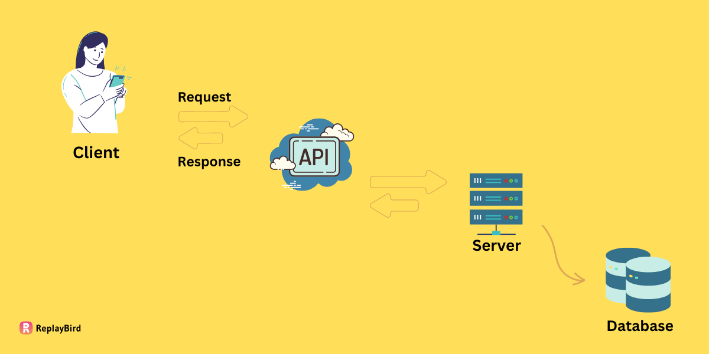
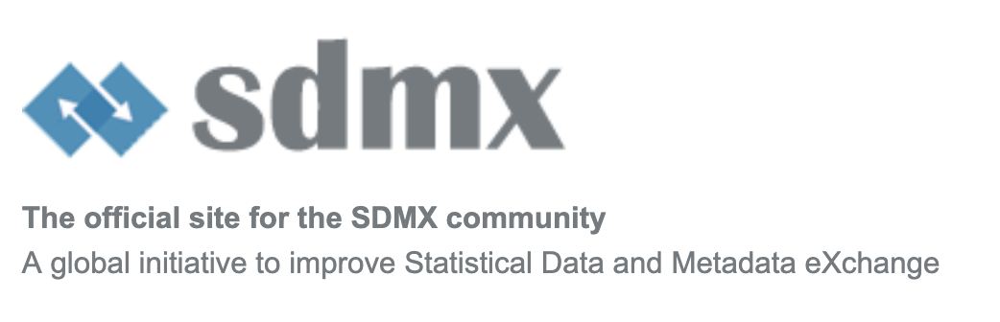
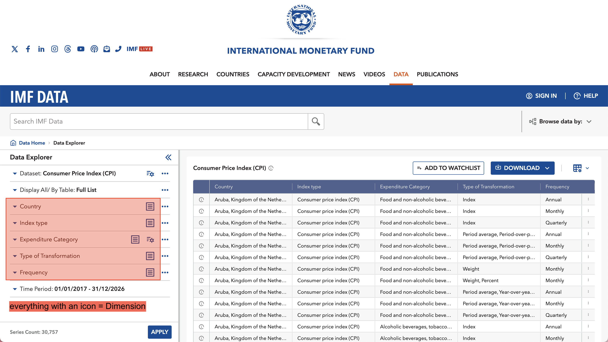
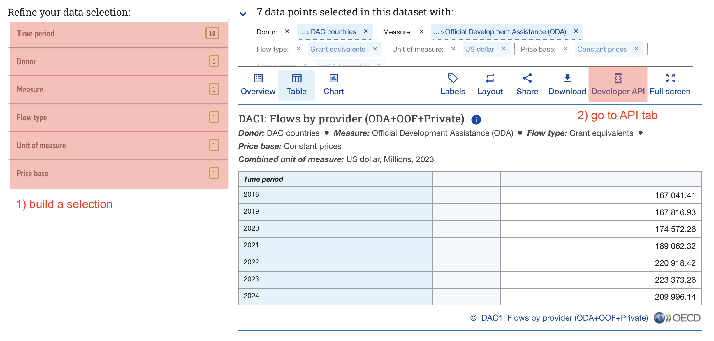
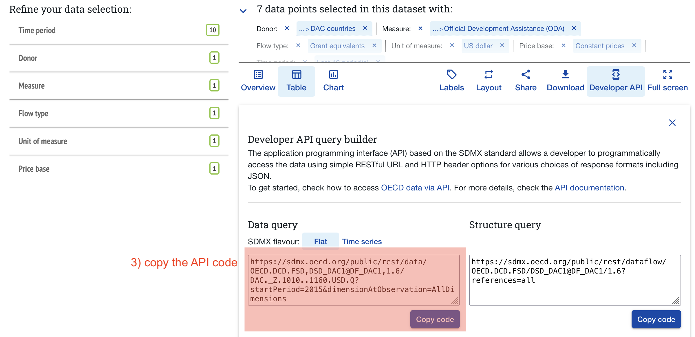
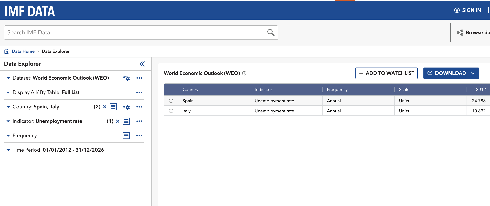
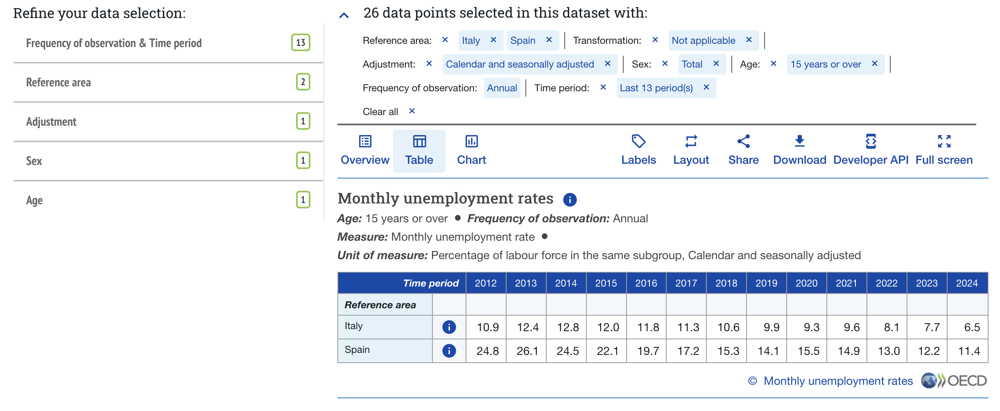

library(tidyverse)
library(rsdmx)How to API in R
27/01/26
General
Preamble
- I cant answer everything, most of it is learning by doing
- Most of the APIs are not really user-friendly documented
- Hopefully it will not take 2 hours
- wdadwd
What is an API?
API = Application Programming Interface
- programmatic way to retrieve data from online servers
- can be anything (uploading, downloading, instructing)
- different API types: REST, SDMX, JSON, … (think dialects)
Goal: Format Request in specific way to get specific data from the server

What is SDMX?

an API for statistical agencies
- BIS, ECB, EUROSTAT, IMF, OECD, World Bank, UN (?), ILO, many NSOs…
- used in many different contexts (e.g NSO pushes to IO etc)
- lengthy 145 page User Guide Link
- only very small / relevant subset covered here (GET DATA)
How does the SDMX API work?
each call must have identifiers for:
Statistical Agency (Provider)
Database (Dataflow)
Columns / Groupings (Dimensions), e.g.
- selected Countries
- Indicator you want
- Time Period
- Dimensions differ for each dataset!
A Basic call: chain all of these together to get the wanted dataset
very abstract, so lets see some
Examples
IMF
On the Website
Goal: CPI data since 1960 for USA, United Kingdom, and Germany

- In the Filter Tab, select categories for all dimensions (one or multiple)
- then click on Listing Icon and switch to Id
- take note of the IDs you want
- THE ORDER IS IMPORTANT!
| Dimension | Name | ID |
|---|---|---|
| Country | United Stations, United Kingdom, Germany | USA, GBR, DEU |
| Index Type | Consumer Price Index | CPI |
| Expenditure | All Items | _T |
| Type of Transformation | Period average, Y-O-Y percentage change | YOY_PCH_PA_PT |
| Frequency | Annual | A |
In the Code
First, lets import the relevant libraries:
define our key by pasting together the selected IDs for each dimension
COUNTRIES <- "USA+GBR+DEU" # All countries
INDICATOR <- "CPI" # selected Indicator
EXPENDITURE <- "_T" # All items / Total
TRANSFORMATION <- "YOY_PCH_PA_PT" # Percentage change
FREQUENCY <- "A" # Annual
key <- paste0(COUNTRIES, ".", INDICATOR,".", EXPENDITURE, ".", TRANSFORMATION, ".", FREQUENCY)
key[1] "USA+GBR+DEU.CPI._T.YOY_PCH_PA_PT.A"Now, we call the API, specifying our provider, database, key, and time period
raw_data <- readSDMX(
providerId = "IMF_DATA", # IMF as Provider
resource = "data", # we want data
flowRef = "CPI", # from the CPI database
key = key, # our carefully created key
start = 1960, # lets limit it to start in 1960
)[rsdmx][INFO] Fetching 'https://api.imf.org/external/sdmx/2.1/data/CPI/USA+GBR+DEU.CPI._T.YOY_PCH_PA_PT.A/all/?startPeriod=1960' The response is in SDMX format, so we have to convert it to a data frame first
df <- as.data.frame(raw_data)
head(df)Lets make a quick plot
df %>%
select(COUNTRY, TIME_PERIOD, OBS_VALUE) %>% # select relevant columns
mutate( # change types of columns
OBS_VALUE = as.numeric(OBS_VALUE),
TIME_PERIOD = as.numeric(TIME_PERIOD)
) %>%
ggplot(aes(x=TIME_PERIOD, y=OBS_VALUE, color=COUNTRY)) + # basic ggplot call
geom_line() + # present as line plot
labs(title="CPI since 1960") # add title
OECD
Goal: Official Development Assistance (ODA)
On the Website


In my Code
url <- "https://sdmx.oecd.org/public/rest/data/OECD.DCD.FSD,DSD_DAC1@DF_DAC1,1.6/DAC._Z.1010..1160.USD.Q?startPeriod=2015&dimensionAtObservation=AllDimensions"now get the data and convert it to a data frame
raw_data_oecd <- readSDMX(url)
df_oecd <- as.data.frame(raw_data_oecd)head(df_oecd)a quick plot
df_oecd %>%
mutate(
obsValue = as.numeric(obsValue),
TIME_PERIOD = as.numeric(TIME_PERIOD)
) %>%
ggplot(aes(x=TIME_PERIOD, y=obsValue)) +
geom_line() +
labs(title="Total ODA since 2018")
Exercise
Prerequisites
The RSDMX Package
install.packages("rsdmx")Your Task
Unemployment Rate for Spain and Italy since 2012
- both ways possible
- different tradeoffs:
- IMF = much easier to search, but more difficult to access
- OECD = vice versa
Links:
The Solution: IMF

COUNTRIES <- "ESP+ITA" # Spain and Italy
INDICATOR <- "LUR" # Unemployment Rate
FREQUENCY <- "A" # Annual
key <- paste0(COUNTRIES, ".", INDICATOR,".", FREQUENCY)raw_data_unemp <- readSDMX(
providerId = "IMF_DATA",
resource = "data",
flowRef = "WEO", # World Economic Outlook
key = key,
start = 2012,
)[rsdmx][INFO] Fetching 'https://api.imf.org/external/sdmx/2.1/data/WEO/ESP+ITA.LUR.A/all/?startPeriod=2012' df_unemp <- as.data.frame(raw_data_unemp)
df_unemp %>%
select(COUNTRY, TIME_PERIOD, OBS_VALUE) %>%
pivot_wider(names_from=COUNTRY, values_from=OBS_VALUE) The Solution: Eurostat
Search for “Unemployment Rate” on data-explorer.oecd.org
Misleading: namend “monthly Unemployment Rate”, but has annual frequency as well
This Table has everything we need: Link

url <- "https://sdmx.oecd.org/public/rest/data/OECD.SDD.TPS,DSD_LFS@DF_IALFS_UNE_M,1.0/ESP+ITA..._Z.Y._T.Y_GE15..A?startPeriod=2012&dimensionAtObservation=AllDimensions"raw_data_eurostat <- readSDMX(url)
df_eurostat <- as.data.frame(raw_data_eurostat)df_eurostat %>%
select(REF_AREA, TIME_PERIOD, obsValue) %>%
pivot_wider(names_from=REF_AREA, values_from=obsValue)Helpful Tips
Github Copilot
Coding Assistant
- with free tier
- directly integrated in RStudio, completes your code on TAB
Note:
- not well trained on (SDMX) API calls, so you probably have to build it yourself
- tidyverse = works really good (although sometimes quite inefficient)
Quarto Markdown
New format in RStudio
- combines Prose and Code
- very good for documenting code and pasting links etc
- allows to produce PDFs, HTML, slides, …
Tidyverse Cheat Sheets
All packages in the tidyverse in R have very good cheat sheets!
Links
- A gentle introduction to SDMX for reproducible data extraction from international organizations
- imfapi package for R (quite new, but should work)
- IMF SDMX central
- verz convoluted overview of IMF datasets, but able to see dimensions
- Eurostat Query Builder
- ILO query builder
additional code
list of all providers
providers <- getSDMXServiceProviders()
as.data.frame(providers)add labels to data frame
COUNTRIES <- "*" # All countries
INDICATOR <- "CPI" # selected Indicator
EXPENDITURE <- "_T" # All items / Total
TRANSFORMATION <- "YOY_PCH_PA_PT" # Percentage change
FREQUENCY <- "A" # Annual
key <- paste0(COUNTRIES, ".", INDICATOR,".", EXPENDITURE, ".", TRANSFORMATION, ".", FREQUENCY)raw_data <- readSDMX(
providerId = "IMF_DATA", # IMF as Provider
resource = "data", # we want data
flowRef = "CPI", # from the CPI database
key = key, # our carefully created key
start = 1960, # lets limit it to start in 1960
dsd = TRUE
)[rsdmx][INFO] Fetching 'https://api.imf.org/external/sdmx/2.1/data/CPI/*.CPI._T.YOY_PCH_PA_PT.A/all/?startPeriod=1960'
[rsdmx][INFO] Attempt to fetch DSD ref from dataflow description
[rsdmx][INFO] Fetching 'https://api.imf.org/external/sdmx/2.1/dataflow/all/CPI/latest/'
[rsdmx][INFO] Fetching 'https://api.imf.org/external/sdmx/2.1/datastructure/all/DSD_CPI/latest/?references=descendants'
[rsdmx][INFO] DSD fetched and associated to dataset! df <- as.data.frame(raw_data, label=T)
head(df)download complete tables
you can also download complete tables without specifying keys (Beware, it takes a lot of time!)
imf_raw <- readSDMX(
providerId = "IMF_DATA",
resource = "data",
flowRef = "WEO",
start = 2023,
end = 2025
)[rsdmx][INFO] Fetching 'https://api.imf.org/external/sdmx/2.1/data/WEO/all/all/?startPeriod=2023&endPeriod=2025' df_huge <- as.data.frame(imf_raw)
head(df_huge)